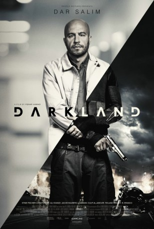

#8315 Darkland
 gesehen am 08.06.2018
gesehen am 08.06.2018
 
 IMDB-Wertung: 6.7 / 10
IMDB-Wertung: 6.7 / 10  Metascore: 0
Metascore: 0 
Zaid (Dar Salim) hat alles was man braucht: eine glückliche Familie, einen gutbezahlten Job, Anerkennung in der Gesellschaft. Als eines Tages sein jüngerer Bruder Yasin (Anis Alobaidi) ermordet wird und die Polizei nichts unternimmt, begibt sich der sonst so friedliche Familienvater auf einen gnadenlosen Rachefeldzug in der kriminelle Unterwelt, um den Mörder zur Strecke zu bringen.
Jahr: 2017
Dauer: 113 Minuten
FSK: 18
Land: Dänemark Studio: Concorde FilmverleihTonspuren:
Untertitel: Deutsch,
Auflösung: 1080p (1920x808) Größe: 4771 MB
Genre: Action, Thriller, Drama, Krimi
Regisseur: Fenar Ahmad
Drehbuch: Fenar Ahmad
Soundtrack: Jens Ole Wowk McCoy
Darsteller:
 Dar Salim als Zaid
Dar Salim als Zaid- Stine Fischer Christensen als Stine
- Ali Sivandi als Semion
- Jacob Lohmann als Torben
 Roland Møller als Claus
Roland Møller als Claus- Dya Josefine Hauch als Gudrun
- Maria Erwolter als Jordemoder
- Magnus Bruun als Kollega
- Amanda Collin als Amanda
- Morten Holst als Morten
- Yusef Abdi als Statist
- Dulfi Al-Jabouri als Alex
- B. Branco als Branco
- Anis Alobaidi als Yasin
- Brian Siva als Hassan
- Hamza Al-Jabouri als Zaids far
- Amany Turk als Zaids mor
- Marianne Mortensen als Helle
- Joen Højerslev als Anton
- Christopher Læssø als
- Morten Ruben Sørensen als Brian
- Patrick Seest als Brians skygge
- Osama Hamza als Semions skygge
- Raza Ahmed als Hassan
- Stepz als Stepz
- Kassam Thedesh als Stormøde Gangster 1
- Veysel Gür als Stormøde Gangster 2
- Bogdan Marius Diaconu als Stormøde Gangster 3
- Selcuk Gür als Stormøde Gangster 4
- Karim Baajour als Stormøde Gangster 5
- Lars Krusaa als Lars
- Jacob Wagner Guldager als Thomas
- Rosalinde Mynster als Lærke
- Nikita Kjær als Nikita
- Niklas Herskind als Niklas
- Jonathan Harboe als Emil
- Ulrikke Toft Simonsen als Ulrikke
- Malanie Njoh als Malanie
- Yoseph Kababo als Zaids onkel
- Azad Khidir als Iman
- Amani Sommer als Politibetjent
- Ahmed Ali als Coke dealer 1
- Heva Sharif als Coke dealer 2
- Ahmed A. Aajour als Fouli
- Abubaker Al-Jabouri als Pusher
- Ibrahim Raja als Smadret pusher
- Kamal El-Ali als Smadret pushers far
- Arjumand Bano als Smadret pushers mor
- Theis Jensen als Anæstesilæge
- Rhassan Muhareb als MMA Kæmper 1
Datei: X:\FSK18-2017\Darkland (2017, FSK18, 1920x808).mkv seit 21.02.2018
Festplatte: FSK18
 Es gibt insgesamt 24 Filme in der Gruppe 'FSK18-2017'
Es gibt insgesamt 24 Filme in der Gruppe 'FSK18-2017'